|
 THE RISING SEA DRAGON IN ASIA - 2007 UPDATE By Jeff Head - Last Update: January 26, 2013 |
 |
              
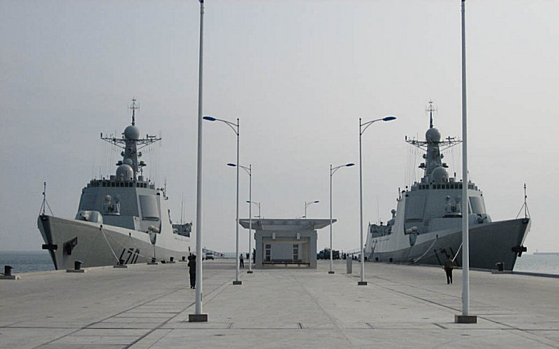 Throughout 2006 and into 2007 the People's Liberation Army Navy (PLAN) has continued its unprecedented modernization and buildup, adding two entirely new classes of major combatant warships to its inventory. This is in addition to the other twelve major classes they have been working on. New guided missile destroyers, guided missile frigates, fast attack craft, very modern and quiet diesel/electric attack submarines, nuclear attack submarines, nuclear ballistic missile submarines, logisitic support craft, amphibious assault craft, and the infrastructure and aircraft to support them are coming online and being trialed and tested at sea and in the air by the PLAN. The major new classes include the improved Type 054, or Ma'anshan guided missile frigates (FFG), called the Type 054A, Jiangkai. These vessels represent a significant improvment of the first two frigates which had been launched and commissioned earlier. The craft appear to have a larger displacement and include a VLS system for their anti-air missiles. Two of these were built and launched in 2006 and the next two are nearing completion with a fifth and possibly a sixth already under construction. It is clear that these vessels will be produced in significant numbers, perhpas up to 25.
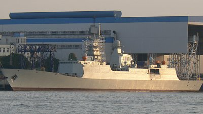 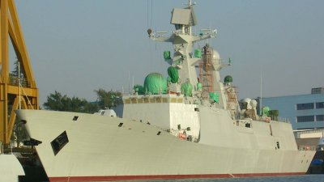 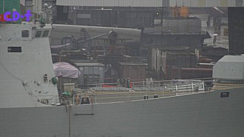 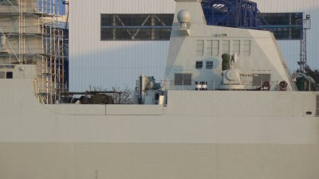 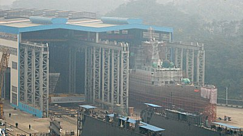 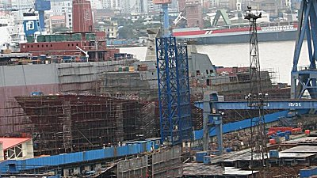 Two new modern and stealthy, Type 054A guided-missile frigates were launched with the 3rd, 4th, and 5th building. More than twenty are projected. The second new class introduced by the PLAN in 2006 was the Type 071 LPD, amphibious assault vessel. Similar to the US San Antonio Landing Platform Dock (LPD), this vessel is a very modern addition to the PLAN Amphibious fleet. It is thought that another vessel of this class may well be constructed in 2007 or 2008. Displacing over 20,000 tons and including a well-deck for smaller amphibious assault craft, the vessel is also armed with 4 CIWS and a dual purpose main gun. The potential for an anti-air missile system, either VLS or cannister mounted is also included. Two to four helicoptors for air assault will aslo be embarked on the large flight deck.
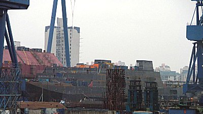 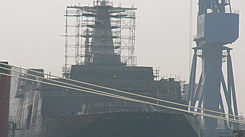 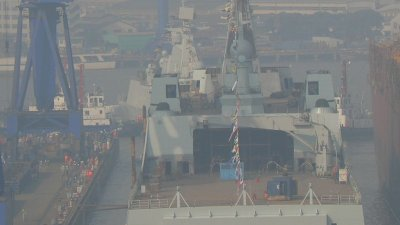 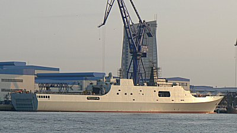 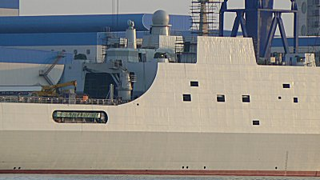 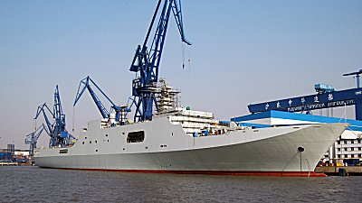 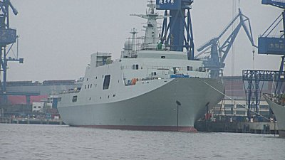 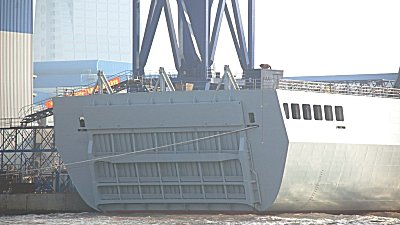 A new, large LPD amphibious assault vessel, Type 071, was built and launched in 2006 by the PLAN. Another significant and telling development in 2006 deals with the Aircraft carrier Varyag that has been being worked on and refitted in the Dalian Shipyards for the last three years. In 2006 the Chinese announced a deal with the Russians to acquire up to fifty SU-33 aircraft, which are the navalized and carrier capable versions of the Russian SU-27 aircraft (also in service with the Peeople's Republic. These are the same aircraft employed on the Russian carrier, Kuznetsov, which is the sister ship to the Varyag that, as mentioned, is now in the Chinese naval shipyard. In addition, the zinc chromate covering, which is a primer for a non-skid surface for aircraft on a carrier deck, has now been painted over with what appears to be a final dark grey non-skid surface. Both of these development are clear indications that the PLAN intends to launch and commission the Varyag as an operational Chinese carrier, probably within the next 3 or so years. 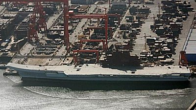 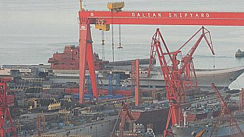 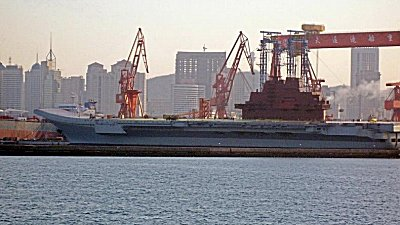 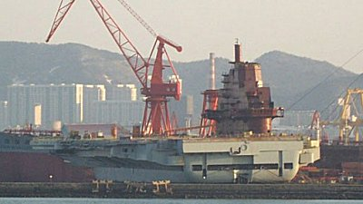 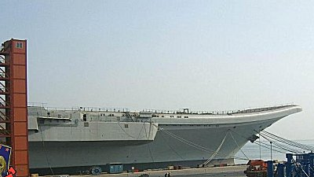  Also of particular note the PLAN took possesion of two improved Sovremenny class destroyers purchased from the Russians. These vessels represent the most modern upgrades to the Sovremenny class vessels available and were built entirely new, specifically for the PLAN. The Sovremenny class destroyers were designed by the Russians to operate in conjunction with other naval and air assets to locate and destroy super carriers such as those deployed by the US Navy. 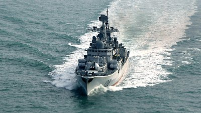 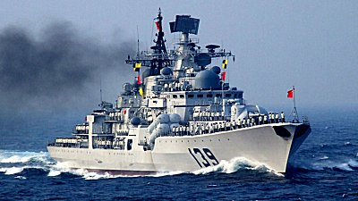 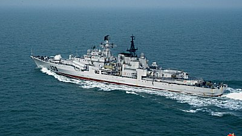 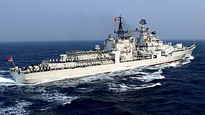 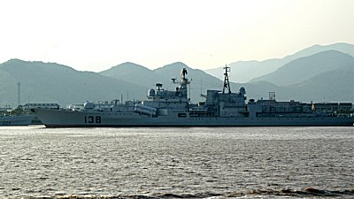 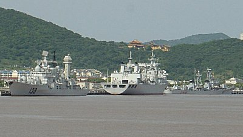 Two new, improved Project 956, Hangzhou guided-missile destroyers were delivered to the PLAN in 2006, bringng to four the number in service. Finally, the PLAN commissioned a second new class replenishment ship, the Weishanhu 887, which is the second in the Qiandaohu class. The Qiandaohu 886 was commissioned in 2005. These represent new fleet replenshiment vessels that now join the four other replenishment vessels the PLAN has. The new ship conducted port visits with Chinese DDGs to Pakistan and India in 2006 and this represents a continued move on the PLAN's part toward blue water operations. 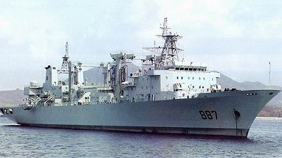 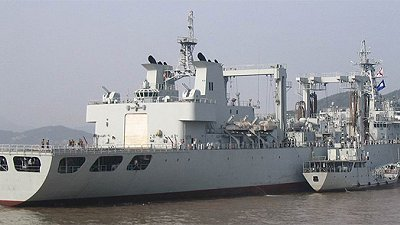 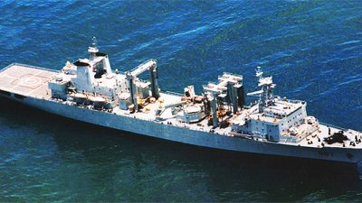 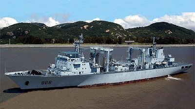 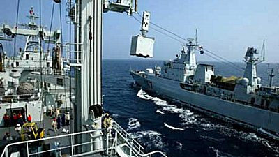 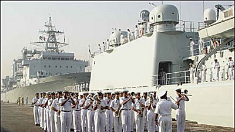 The new fleet replenishment vessel, the Weishanhu 887, was commissioned and joined the Qiandaohu 886 in 2006 and was promptly sent on port calls in the same year. More and more Stealth FAC Type 022s were also being built throughout 2006 at multiple shipyards. It is not known exactly how many of these advanced, fast, and stealthy catamaran missile boats have been built, but estimates now range up well over twenty and perhaps as many as thirty. It is estimated that 50 or more will be built.   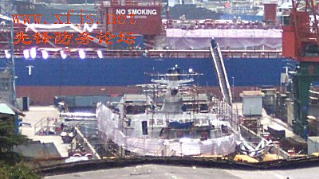 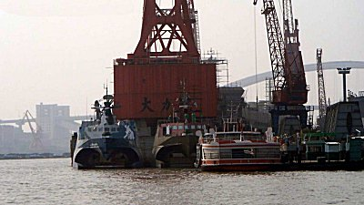 Many more stealth catamaran FACs were built during 2006. In addition, the many other vessels and aircraft spoken of from this site's 2006 PLAN Update, continue to be integrated into PLAN operations as the following pictures atest.
                                       
By way of reference, in general numbers, over the last five to six years, the PLAN has built and launched over 80 new major surface combatants for its fleet. In that same time period, they have not decommissioned any major surface combatants, meaning they have added 80 major surface combatant vessels to their inventory. In that same period, the US Navy has built 46 new major surface combatants. At the same time, the US Navy has decommissioned 49 major surface combatants, many of them with 10-15 years of service life remaining, meaning a net loss of three major surface combatants in this period. Clearly the trend shows that the PLAN is rapidly closing the gap between itself and the US Navy, and particualrly when focusing on the Western Pacific, which is where the PLAN is concentrated, this is a trend worthy of watching and considering in future US Navy and other western nation's planning and acquisition schedules.
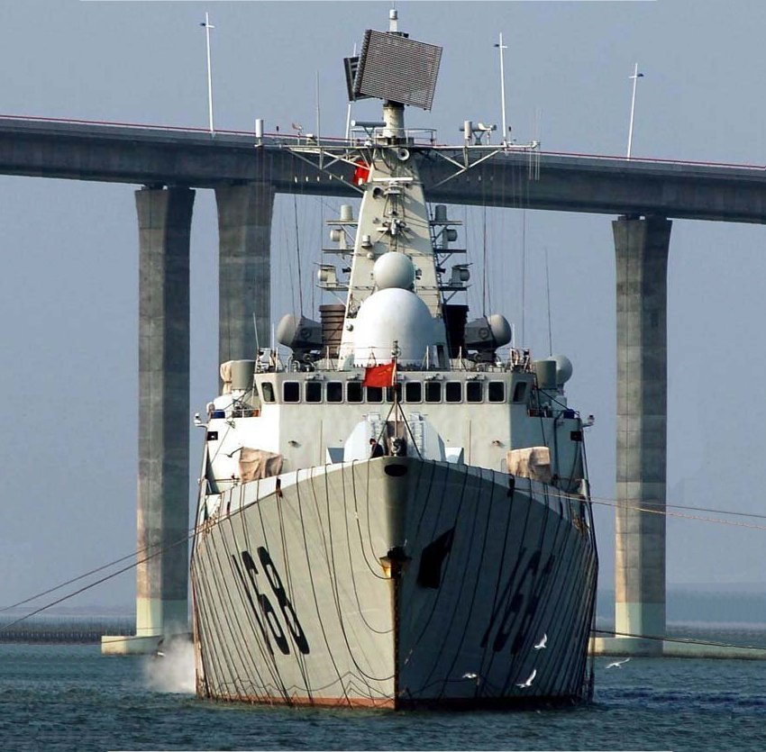 | ||
Copyright © 2005-2012 by Jeff Head
JEFFHEAD.COM Hit Counter
Jeff Head's Naval Sites Hit Counter
|